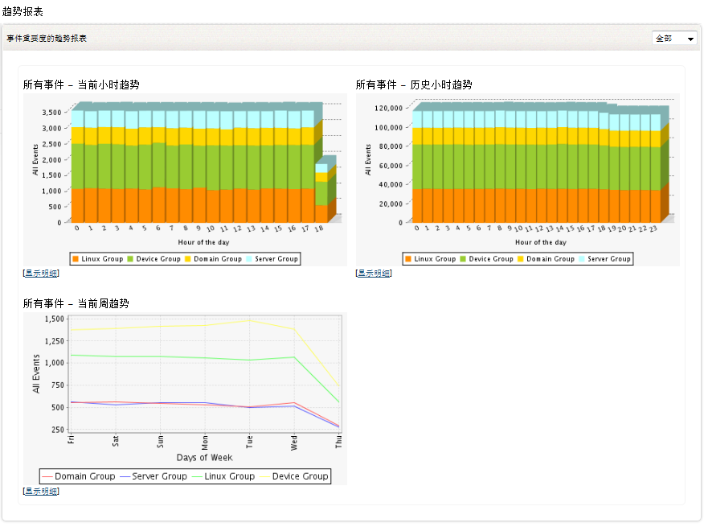
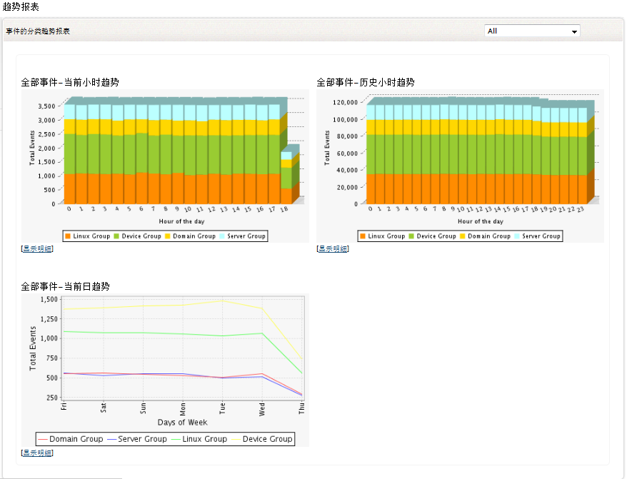
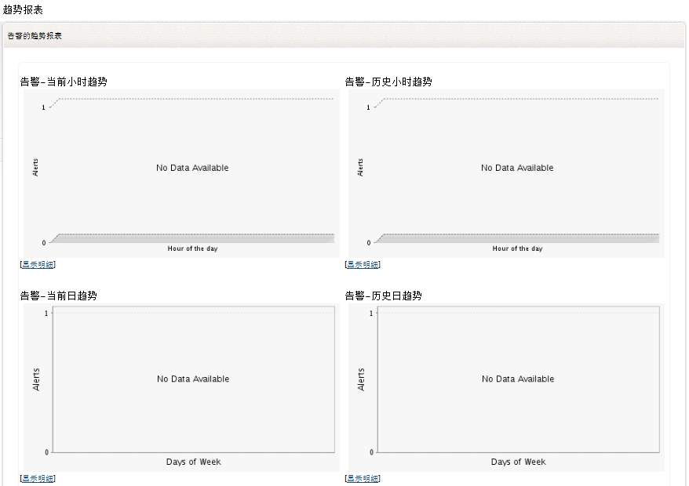

趋势报表
趋势报表让您可以在一段时间内基于指定的规则，分析网络中的Windows和UNIX主机的性能。
要查看趋势报表，可通可以下菜单实现：
您可以按事件的重要度或事件类型来监视事件的趋势。您可以监视触发告警的趋势。 EventLog
Analyzer中的所有趋势报表都显示当前的趋势，并将此与历史趋势进行比较。可用的趋势报表，每小时（时间段粒度为一小时）和每周（时间段粒度为一天）。您也可以按工作事件、非工作事件和完全的时间段查看趋势报表。
每一个趋势图表之下，都可以点击显示明细链接显示对应数据列表。
不同重要度的事件趋势
这个趋势报表根据事件的重要度显示主机组生成的事件数，以每小时或者每天为基础显示当前或历史趋势。并且您可以在查看重要度中选择十个严重级别中的任意一个或全部。

不同分类的事件趋势
这个趋势报表根据事件的类型显示主机应用、系统和安全的事件数。您可以在浏览类型输入框中选择以小时或者天为单位显示当前或者历史的趋势。并且您可以在查看类型中选择类型中的任意一个或全部。

告警趋势报表
这个趋势报表类型，为您显示了当前和历史的每小时/每天的告警触发趋势。

|